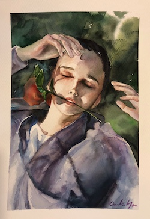

Before reading the article “Game Design UX Best Practices” by Amir Dori, I always thought that to design a game is
complicated and nothing that I am learning is related to it. However, Dori’s article shifted my mind. In fact, game
design is just what I am learning but aiming at strategies in UI/UX that are designed for smaller screens! I enjoy
the details that Dori covers in his article such as the UI positions, sliders, and pop-up because I have been working
on those recently but on a larger screen. Compare game design to web design, what made it more complicated are the
constraints of device size. It is so impressive to see how designers use different strategies and ideas to overcome
the obstacles.
I found this image in my sunglasses collection the most interesting one because its bright yellow color not
only matches every background color but also gives a beautiful contrast and detailing of the object itself.
I like how the shadowing lines came out organized and simple. Many other images of my sunglasses collection
are in black color so I think this yellow sunglasses is going to stand out and bring in some warmth to the
screen. The shape of the image is symmetrical and well balanced as well. In my collection for the Every Picture
project, this image weights the same as the others and is considered as one of the sunglasses I have. Even though
this image is like every other image, I think its uniqueness is going to make it everyone’s favorite of my
sunglasses collection. When I finish my collection for this project, I think everyone is going to be able to
understand my fashion styles and imagine how the sunglasses are going to look on me.
Part II

Figure 2 - Caroline Yau, 2021
This image above belongs to my group mate, Caroline Yau. She claimed that this image is one of her favorite
drawings from her portfolio. She also mentions that for the Every Picture project, she is going to make a slideshow
of her portfolio art works. I found Caroline’s art extremely beautiful according to its compositions, choice of
colors, shadowing, and cleanness. The Image almost looked alive to me. Furthermore, Caroline illustrated the character
so well that the art is sending various emotions to the audience. The color blends and content gives a relaxing vibe
and is very inspirational. The most obvious aspect of this image is that the character is relexing on the grass and
the most mysterious aspect of this image is that the audience may not tell whether the character is in a great mood.
I am exited to see Caroline’s final version of her Every Picture project.
I enjoy looking at the website Pierre Herme Nicolas Buffe not
only because it has consistent, simple but unique graphics but also the interactions created. When I enter the
website, there is mysterious graphic design with a paragraph introducing the story inside of it. Once I start
the story, the first page I see is a simple intruction on how to navigate the site - by dragging the button to
continue. When I arrive at the main page, I can explore the story by interacting with the images that are in a
circle, and the story starts telling from there. There is also a background music that is very pleasing. To keep
reading the story, I can simply drag the button which I think is great to keep the interaction consistent so that
the users know what they are doing.
I chose to read Naema Baskanderi’s article “Best Practices for Modals/Overlays/Dialog Windows” because
I found the other article’s typography and layout is more difficult for me to read. In Baskanderi’s
article, though some of the sentences are not separated by commas, I found the content is interesting
and worth reading. Something that I was not aware of before reading this article is that the sizing and
the placement of the modals/overlay/dialog windows. I strongly agree with the suggestions which are to
place the overlay on the “upper half of the screen” and “do not use more than 50% of the screen for the
overlay.” (2017). I have used overlay windows in some of my UI designs but I never paid much attention
to the placement of text, sizing, and location - I was more likely just to measure by my own eyes.
Now that I learned Baskanderi’s suggestions and understood the explanations, I will always apply these
recommendations to my design principles.
I totally agree with what the article is saying - to design a most user-friendly interface, we need
to stick with the principles of “less is more”. When asking questions and designing the layout, it
is always better to display the minimum texts needed and use a simpler layout such as choosing one
column instead of two. The concept that the article “Best Practices for Form Design” is trying to
illustrate is similar to Hick’s Law, which is the principle that I always think of when creating
digital content. Besides, I like how this article breaks down the design process in detail to enable
me to catch little things that I never noticed before such as the “optional and required fields”.
Furthermore, I learned that making a form tab-ready is essential to maximizing a user’s experience.
Overall, this article is very helpful for me when it comes to designing a form for users to complete.